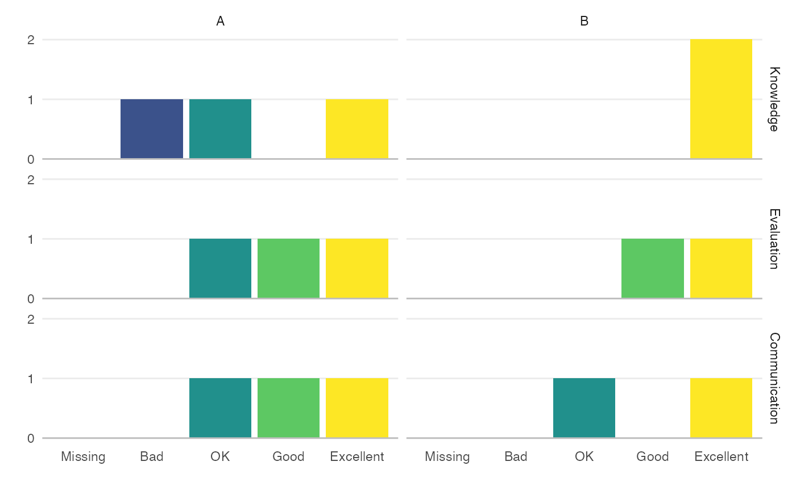

If you have columns in your marking spreadsheet that give category labels to each of several criteria (e.g., marking the criteria Knowledge, Evaluation and Communication with the categories 0-4), you can plot an overview of this.
cat_dist(marks, cols, cats = NULL, xaxis = c("col", "cat"), facet_by = NULL)
Arguments
| marks | table with criteria columns |
|---|---|
| cols | a named vector of the criteria (names are the marks column names and values are the text to display) |
| cats | a named vector of the marking categories (names are the value in marks and values are the text to display) |
| xaxis | what to plot on the x-axis ("col" = the evaluation columns, "cat" = the marking category labels) |
| facet_by | columns for facet graphs |
Value
ggplot object
Examples
cols <- c(KR = "Knowledge", CE = "Evaluation", AC = "Communication") cats <- c("0" = "Missing", "1" = "Bad", "2" = "OK", "3" = "Good", "4" = "Excellent") cat_dist(demo_marks, cols, cats)cat_dist(demo_marks, cols, cats, "cat", "question")